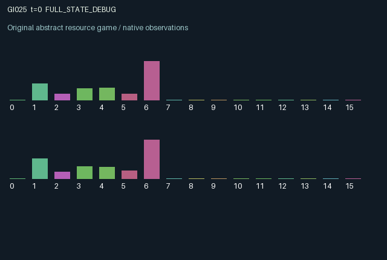

GI025 / LEGACY_ARRAY
Candidate astra-d2-00025: Coupled reaction chambers
2 agents5 actions16 observation columns32 original horizonRuntime: PASS
Release verification episode
Untrained uniform legal actions. Actual JAX state sampled along the full original episode; full-state debug camera. No human performance or learning claim.

Run this game
crucibles play --game 25
Start Python locally, then open the address printed by the terminal. Installation, multiplayer, takeover and keyboard controls →
Objective, rewards & ending
Exact task contract
{
"objective": "Accumulate original per-agent rewards under the interaction rules in mechanism.md.",
"natural_termination": "No early terminal; original t >= 32 horizon.",
"exact_transition_and_reward_source": "def raw_step(self, key, state, actions):\n feed = actions == 1\n catalyse = actions == 2\n cool = actions == 3\n harvest_action = actions == 4\n thermal_window = jnp.clip(\n 1.0 - 1.7 * jnp.abs(state[\"temperature\"] - 0.5), 0.0, 1.0\n )\n reaction = (\n jnp.minimum(state[\"charge\"], 0.05 + 0.20 * state[\"catalyst\"])\n * thermal_window\n )\n coolant_request = 0.24 * cool.astype(jnp.float32)\n request_total = jnp.sum(coolant_request)\n allocation = jnp.minimum(\n 1.0, state[\"coolant\"] / jnp.maximum(request_total, 0.001)\n )\n coolant_used = coolant_request * allocation\n harvest = jnp.where(\n harvest_action, jnp.minimum(state[\"product\"], 0.6), 0.0\n )\n predicted_temperature = (\n state[\"temperature\"]\n + 0.38 * reaction\n + 0.08 * feed.astype(jnp.float32)\n + 0.10\n * (jnp.roll(state[\"temperature\"], 1, axis=0) - state[\"temperature\"])\n - 0.75 * coolant_used\n + jnp.roll(state[\"plume\"], 1, axis=0)\n - 0.035\n )\n shock = predicted_temperature > 0.98\n temperature = jnp.where(\n shock, 0.58, jnp.clip(predicted_temperature, 0.05, 1.2)\n )\n charge = jnp.clip(\n state[\"charge\"] - reaction + 0.24 * feed.astype(jnp.float32),\n 0.0,\n 1.0,\n )\n product = jnp.clip(state[\"product\"] - harvest + reaction, 0.0, 1.0)\n catalyst = jnp.clip(\n 0.96 * state[\"catalyst\"] + 0.30 * catalyse.astype(jnp.float32),\n 0.0,\n 1.0,\n )\n charge = jnp.where(shock, 0.35 * charge, charge)\n product = jnp.where(shock, 0.20 * product, product)\n catalyst = jnp.where(shock, 0.50 * catalyst, catalyst)\n coolant = jnp.clip(\n state[\"coolant\"] - jnp.sum(coolant_used) + 0.08, 0.0, 1.0\n )\n costs = (\n 0.030 * feed.astype(jnp.float32)\n + 0.020 * catalyse.astype(jnp.float32)\n + 0.010 * cool.astype(jnp.float32)\n )\n rewards = jnp.clip(\n 0.65 * harvest\n - costs\n - 0.30 * shock.astype(jnp.float32)\n - 0.06 * jnp.roll(shock, 1, axis=0).astype(jnp.float32),\n -1.0,\n 1.0,\n ).astype(jnp.float32)\n next_state = {\n \"t\": state[\"t\"] + jnp.array(1, dtype=jnp.int32),\n \"charge\": charge.astype(jnp.float32),\n \"product\": product.astype(jnp.float32),\n \"temperature\": temperature.astype(jnp.float32),\n \"catalyst\": catalyst.astype(jnp.float32),\n \"coolant\": coolant.astype(jnp.float32),\n \"plume\": (0.35 * coolant_used).astype(jnp.float32),\n \"last_reaction\": reaction.astype(jnp.float32),\n \"last_shock\": shock,\n \"last_reward\": rewards,\n \"last_action\": actions.astype(jnp.int32),\n }\n done_all = next_state[\"t\"] >= 32\n dones = jnp.full((2,), done_all, dtype=jnp.bool_)\n info = {\"done_all\": done_all, \"legal_mask\": self.legal_actions(next_state)}\n return self.observe(next_state), next_state, rewards, dones, info"
}Declared per-step reward bounds: -1.0 to 1.0. Observability: source_defined.
Rules
Original mechanism document (historical status wording retained)
# Candidate astra-d2-00025: Coupled reaction chambers Status: original parentless source authored under the supplied v2 contract. The author has not executed the candidate, initialized JAX, compiled it, applied the isolated validator, or evaluated learning. ## Causal mechanism Each agent controls one chamber with feedstock, catalyst, product, and temperature. Reaction occurs autonomously using the state at the start of the transition. Its rate depends jointly on available feedstock, existing catalyst, and a temperature window centered at 0.5. Feed added now and catalyst added now can affect subsequent reactions; product created now cannot be sold until a later transition. The two chambers exchange heat every step and draw cooling fluid from one regenerating reservoir. Simultaneous requests share the available coolant proportionally. Cooling lowers the requesting chamber's temperature immediately, but creates an exhaust plume that heats the other chamber on the next transition. Thus cooling can protect local production while imposing a delayed thermal externality, and requesting scarce coolant reduces the counterpart's available cooling. Predicted temperature above 0.98 causes a local shock: the chamber cools to 0.58, feedstock falls to 35 percent, product to 20 percent, and catalyst to 50 percent of their pre-shock updated amounts. A shock also imposes a smaller reward loss on the other role. The other agent can affect both future local production and realized rewards through heat diffusion, exhaust, coolant contention, and shocks. ## Actions and information The five actions are 0 idle, 1 feed, 2 add catalyst, 3 cool, and 4 harvest. Feed adds 0.24 up to capacity one, catalyst adds 0.30 before capacity clipping, and harvest sells at most 0.6 of the product present at the start of the transition. Cooling requests 0.24 units. The shared reservoir regenerates by 0.08 after allocation. All actions remain legal. The 16 observation columns are time, own feedstock, own product, own temperature, other temperature, own catalyst, shared coolant, own outgoing plume, other outgoing plume, own last reaction, other last reaction, own last shock, other last shock, own last action, other last action, and own last reward. The source normalizes temperatures, plume amounts, reaction amounts, time, and actions. The other chamber's feedstock, catalyst, and product are not directly observed. Public reaction and thermal readings can still reveal information about those stocks. ## Incentives, delay, and reward bounds Harvest earns 0.65 times the amount sold. Feeding, adding catalyst, and cooling cost 0.030, 0.020, and 0.010. A local shock costs 0.30 and a counterpart shock costs 0.06. Because sale uses old product, that sale is realized before any same-transition shock destroys the remaining updated product. Harvest is at most 0.6, so positive reward is at most 0.39. Even conservatively adding the largest action cost and both shock penalties gives a lower bound of -0.39. The source additionally clips every reward to [-1,1]. These bounds follow from the written transition equations and are not validation results. Investment delays, stored product, catalyst decay, temperature feedback, and delayed exhaust allow an action to matter across several future steps. A locally useful cooling action can hurt the other reactor, while avoiding a shared shock penalty can favor restraint. None of these possibilities establishes a learning advantage. Time advances exactly once per transition and termination at 32 leaves the final physical state intact without liquidation or reset. ## Relationship and limits The proposal draws on generic coupled control, production inventories, congestion over a shared resource, and delayed negative externalities. It is an abstract numerical mechanism, not a physical chemistry model. No benchmark or parent source was consulted, and no novelty, nonisomorphism, or pool eligibility is asserted. Passive cooling and alternative operating cycles may make some interventions unnecessary in particular trajectories; this remains an empirical matter for the designated experimenter.
Commands
0Wait
1Feed chamber
2Catalyse reaction
3Cool chamber
4Harvest product
Roles & abilities
agent_0 Original legacy agent; see mechanism and source
agent_1 Original legacy agent; see mechanism and source
Observation permissions
Training receives only the original observation rows. Role cameras use declared visibility; debug cameras are explicitly marked. Local benchmark records log debug exposure and role takeover history.
Exact observation layout
[
{
"slice": [
0,
16
],
"visibility": "exact original observe() below",
"source_code": "def observe(self, state):\n obs = jnp.zeros((2, 16), dtype=jnp.float32)\n obs = obs.at[:, 0].set(state[\"t\"] / 32.0)\n obs = obs.at[:, 1].set(state[\"charge\"])\n obs = obs.at[:, 2].set(state[\"product\"])\n obs = obs.at[:, 3].set(state[\"temperature\"] / 1.2)\n obs = obs.at[:, 4].set(jnp.roll(state[\"temperature\"], 1, axis=0) / 1.2)\n obs = obs.at[:, 5].set(state[\"catalyst\"])\n obs = obs.at[:, 6].set(state[\"coolant\"])\n obs = obs.at[:, 7].set(state[\"plume\"] / 0.084)\n obs = obs.at[:, 8].set(jnp.roll(state[\"plume\"], 1, axis=0) / 0.084)\n obs = obs.at[:, 9].set(state[\"last_reaction\"] / 0.25)\n obs = obs.at[:, 10].set(jnp.roll(state[\"last_reaction\"], 1, axis=0) / 0.25)\n obs = obs.at[:, 11].set(state[\"last_shock\"].astype(jnp.float32))\n obs = obs.at[:, 12].set(jnp.roll(state[\"last_shock\"], 1, axis=0).astype(jnp.float32))\n obs = obs.at[:, 13].set(state[\"last_action\"] / 4.0)\n obs = obs.at[:, 14].set(jnp.roll(state[\"last_action\"], 1, axis=0) / 4.0)\n obs = obs.at[:, 15].set(state[\"last_reward\"])\n return obs.astype(jnp.float32)"
}
]Entity visibility & attributes
[]
Actual verification & provenance
Per-game execution receipt
{
"game": "gi025",
"status": "PASS",
"verification_revision": 2,
"source_sha256": "fa2a8bf935754995818439328b801201540d1a034aef93d1edc56b8e0e243aec",
"seed": 20261101,
"runtime": {
"jax": "0.4.38",
"numpy": "1.26.4",
"devices": [
"TFRT_CPU_0"
]
},
"dimensions": {
"num_agents": 2,
"observation_size": 16,
"num_actions": 5,
"max_steps": 32
},
"checks": {
"eager_reset": {
"status": "PASS",
"seconds": 0.4855341911315918
},
"observation_spaces_legal_masks": {
"status": "PASS",
"seconds": 0.14975810050964355
},
"eager_step": {
"status": "PASS",
"seconds": 0.8726813793182373
},
"jit_reset": {
"status": "PASS",
"seconds": 0.29462432861328125
},
"jit_step": {
"status": "PASS",
"seconds": 0.2582664489746094
},
"eager_jit_integer_parity_float_measurement": {
"status": "PASS",
"seconds": 0.0005278587341308594
},
"jit_vmap_reset": {
"status": "PASS",
"seconds": 0.3536403179168701
},
"jit_vmap_step": {
"status": "PASS",
"seconds": 0.32482028007507324
},
"outer_autoreset_api": {
"status": "PASS",
"seconds": 0.5260219573974609
},
"full_original_horizon_episode_and_render": {
"status": "PASS",
"seconds": 1.3660261631011963
}
},
"human_scores": null,
"browser_controls": "PENDING",
"failures": [],
"elapsed_seconds": 5.121582984924316,
"float_parity_max_abs": 4.470348358154297e-08,
"numerical_parity": "UNDETERMINED_NONZERO_FLOAT_DIFFERENCE",
"raw_terminal_absorbing": "NOT_PART_OF_ORIGINAL_LEGACY_CONTRACT",
"terminal_outer_reset": "PASS",
"episode_steps": 32,
"scripted_random_returns": [
0.08538440818665549,
0.541737557072338
],
"terminal": true,
"demo_information": "FULL_STATE_DEBUG",
"demo_frames": 33,
"render_roles_checked": 2
}Chromium control verification
{
"game": "gi025",
"status": "PASS",
"human_scores": null,
"engineering": true,
"checks": [
"catalog_selected_and_real_native_reset",
"dom_queue_and_native_step",
"second_participant_ownership_and_native_joint_step",
"all_roles_individually_controllable_no_role_cap",
"explicit_debug_camera",
"release_to_pure_ai_without_reset",
"close_session_preserves_log"
],
"ui_sha256": "96243f9de144b80b5e20a114330e2206bdcd58d3efc9c6f13bbc08b95cacc14d",
"keyboard": "NO_LEGAL_CARDINAL_COMMAND_FOR_ROLE0_AT_RESET",
"seconds": 4.3511247634887695
}Original identity and file hashes
{
"id": 25,
"key": "gi025",
"title": "Candidate astra-d2-00025: Coupled reaction chambers",
"summary": "",
"tags": [],
"family": "legacy_array",
"dimensions": {
"num_agents": 2,
"observation_size": 16,
"num_actions": 5,
"max_steps": 32
},
"source_sha256": "fa2a8bf935754995818439328b801201540d1a034aef93d1edc56b8e0e243aec",
"manifest_sha256": "90730bc0190795f73de7b6ff10ed0ae258df0bce2a8b06b61f3bc4df286a210f",
"files": [
{
"file": "candidate.py",
"sha256": "fa2a8bf935754995818439328b801201540d1a034aef93d1edc56b8e0e243aec",
"bytes": 5512,
"origin": "work/exp_2/astra_generation/discovery_v2/initial/candidate_00025/attempt_00/candidate.py"
},
{
"file": "mechanism.md",
"sha256": "fc21a39a8e309b3d3a7a85adf45f9f0d9e88c8d6bd14a44f37c3178564e4ef43",
"bytes": 4154,
"origin": "work/exp_2/astra_generation/discovery_v2/initial/candidate_00025/attempt_00/mechanism.md"
}
],
"original_status": "LEGACY_SOURCE",
"original_saved_replay": false,
"release_validation": "PASS",
"human_scores": null,
"browser_validation": "PASS"
}